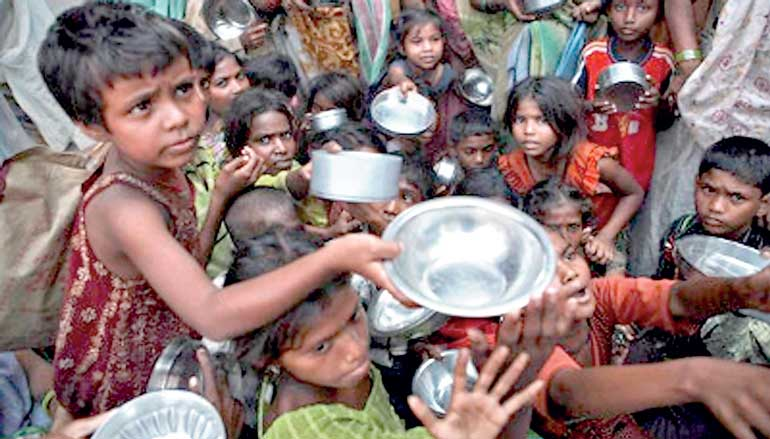
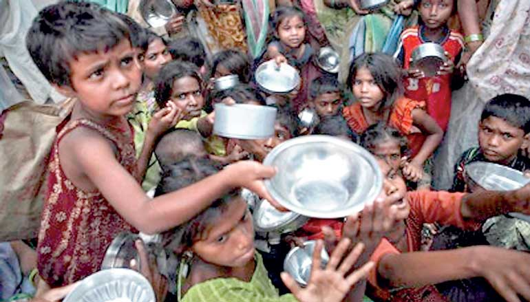

Sustainable Development Goals (SDGs) atau Tujuan Pembangunan Berkelanjutan adalah komitmen global dan nasional yang telah disepakati negara-negara. SDGs dirancang oleh Perserikatan Bangsa-Bangsa (PBB) untuk menciptakan kehidupan yang meningkat dan lebih baik, serta kesetaraan bagi semua orang. Dapat dilaksanakan dengan adanya 17 tujuan SDGs yang mendukung semua tantangan global dan saling terhubung untuk menciptakan solusi yang berkelanjutan. Tujuan ini semua sangat penting agar negara-negara dapat menghadapi tantangan global yang sedang dihadapi di masa kini.
Untuk mencapai semua 17 tujuan dari SDGs tentunya tidak mudah. Setiap negara harus memiliki masyarakat yang komitmen, bekerjasama, juga inovasi yang terus menerus tanpa putus. SDGs bukan hanya tujuan yang ingin kami mengapai namun juga sebagai panduan menuju ke realita yang lebih baik dan berkualitas.
SDGs (Tujuan Pembangunan Berkelanjutan) adalah agenda global hingga tahun 2030 yang berfokus pada pembangunan berkelanjutan dengan dasar hak asasi manusia dan prinsip kesetaraan. SDGs mengedepankan pendekatan yang universal, terintegrasi, dan inklusif untuk memastikan tidak ada individu atau kelompok yang tertinggal. Agenda ini terdiri dari 17 tujuan dan 169 target, yang menjadi kelanjutan dari Millenium Development Goals (MDGs) yang berakhir pada 2015. Di Indonesia, pelaksanaan SDGs diatur melalui Peraturan Presiden Nomor 59 Tahun 2017 tentang Pencapaian Tujuan Pembangunan Berkelanjutan.
Agar SDGs dapat tercapai, diperlukan banyak kerjasama antar negara untuk mempercepat pertumbuhan dan saling melengkapkan kelebihan negara masing-masing. Sangat penting untuk menjalankan hubungan dan kerjasama secara internasional baik dalam bentuk bilateral, regional, maupun multilateral. Dengan kerjasama dan panduan ini dapat melaksanakan dan mencapai 17 tujuan SDGs dengan lebih mudah dan saling mendukung. Ini dapat menciptakan kemajuan yang berkelanjutan, sekaligus menciptakan hubungan erat antar negara.